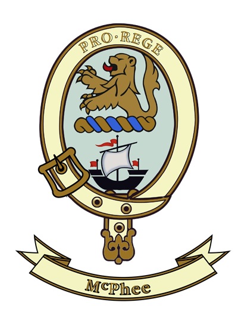

Officers
Clan Society President
Glen McPhee
Vice President
Denise Maidment
NZ Clan Commissioner
James McPhee Esq
NZ Society Secretary/Treasurer
Susan McPhee
Contact Email:
mcpheeclannz@gmail.com
 |
Ceud Mile Failte- One Hundred Thousand Welcomes
Purpose of the Clan McPhee Society of New Zealand
- To promote pride and knowledge in the McPhee ancestors, Clan Customs and associated Scottish heritage
- To create and foster a spirit of understanding towards Scottish heritage and encourage an active interest in Scottish culture, music and dance.
- To unite Society members in the bonds of clanship, fellowship and mutual understanding.
- To encourage the exchange of news, views and ideas through contributions to the Society Newsletter.
- To abide by and participate in the affairs and activities of the International Societies.
Membership is open to all whose -
- Name is McPhee no matter what spelling (male or female), or who are descended from, by marriage to, or adopted by a person with an eligible surname.
- Name is included in the accepted list of spellings of McPhee (Macfie) plus any other person who may have an interest in the history of Clan Macfie.
Some of the accepted spellings are -
Athey, Athie, Cathey, Cathie, Coffee, Coffey, Dugee, Duggie, Duffey, Duffy, Fee, Guffey, Guffie, Haffey, Haffie, McAfee, McAlfie, McCaffer, McCaffrey;, McCaffie, McCathey, McCathie, McCuish, McDufee, McDuffie, McDuffey, McDuffy, McDuffin, McFee, McFie, McGuffey;, McGuffie, McGufin, McHaffie, McHaffy, McPhee, McPhie, McVee, McVie, McHaffey, Mehaffey, Phee, Phie
NB The prefix Mc and Mac are interchangeable
The Origin of the New Zealand Clan SocietyThe McPhee Family Clan Society of New Zealand was formed in response to a worldwide call by the late Dr Earle Douglas MacPhee of Vancouver, Canada, in the early 1970's to reactivate Clan Macfie.
The Clan Society was initially formed in Papakura in 1974 with 30 members of the family of Belle McPhee Brew the founder of the Clan Society. The Clan Society was accepted as a Society within the international Clan Macfie in 1984. The word 'Family' was removed from the name of the Clan Society in 1993.
Today the New Zealand Clan Society has some 40 members and a membership over 5000 through affiliation of other Societies to the international Clan Macfie.
Clan Society ManagementApart from the AGM the Society does not hold regular meetings. The AGM is held during the closest weekend to 27 May which has been set aside as International Clan Macfie Day. The evening dinner, a social gathering and celebration is always well attended and on occasions members from other clans also attend.
The Clan Society receives an invitation to attend regular Scottish events held at other venues throughout the country. A Clan banner is displayed at these events at which the Society participates.
Join us for -
- Quarterly newsletter to all members
- Notification of events
- Genealogy encouraged amongst like minded members
- The enjoyment of kinship & special gatherings with international Macfie Societies
- Your say in the Clan Macfie Parliament sessions held in Scotland every 4 years
There is no joining fee. Membership fees PA are $15 single membership or $25.00 for family membership.
To join us or if you need more information please use the Membership form link. |